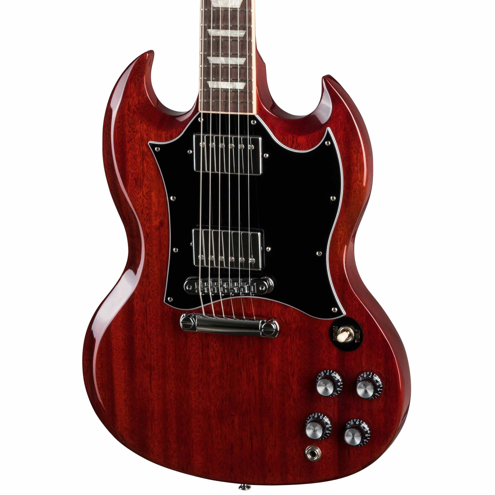

Las guitarras Gibson SG destacan por su diseño distintivo y su versatilidad sonora. Con un cuerpo de caoba delgado y ligero, ofrecen una gran comodidad y un acceso fácil a los trastes superiores. Su mástil, también de caoba, se combina con un diapasón de palisandro para una experiencia de juego fluida. Equipadas con pastillas humbucker, proporcionan un sonido potente y claro, ideal para rock y metal. El diseño de doble cutaway y el perfil del mástil favorecen un acceso sin restricciones a todo el diapasón, haciendo de la SG una opción popular entre guitarristas que buscan agresividad y comodidad.
